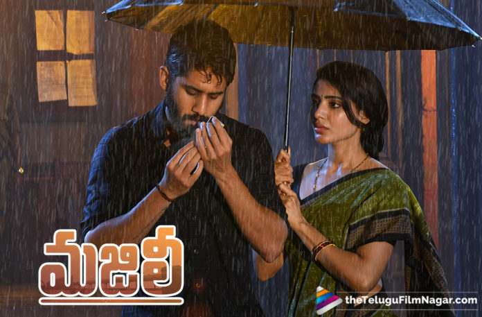

|
Indian (About this soundpronunciation (help·info)) is a 1996 Indian Tamil-language vigilante action film written and directed by Shankar and produced by A. M. Rathnam. The film stars Kamal Haasan in dual roles with Manisha Koirala, Urmila Matondkar, Sukanya and Goundamanisenthil appearing in other pivotal roles. The film's score and soundtrack are composed by A. R. Rahman, while cinematography was handled by Jeeva.
The film focuses on an ex-freedom fighter turned vigilante bent on rooting out corruption, and his son, who is at the other end of the spectrum by facilitating corrupt practices leading to some unfortunate events. He is well trained in Varmakkalai, an ancient lethal martial art used for close counter combat (Choreographed by Aasan R. Rajendran).
The film opened to positive reviews from critics on the way to becoming a commercial blockbuster in the Tamil film industry. Indian was selected by India as its entry for the Best Foreign Language Film for the Academy Awards in 1996, but was not nominated.[4][5] The film also went on to win three National Film Awards including that of Best Actor for Kamal Haasan's portrayal, while his performance also saw him win at the Filmfare Awards and the Tamil Nadu State Film Awards. It was the highest-grossing Tamil film upon its release, beating the collections of Baashha, until surpassed by Padayappa three years later.
|

|